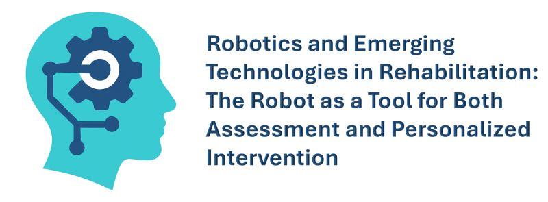
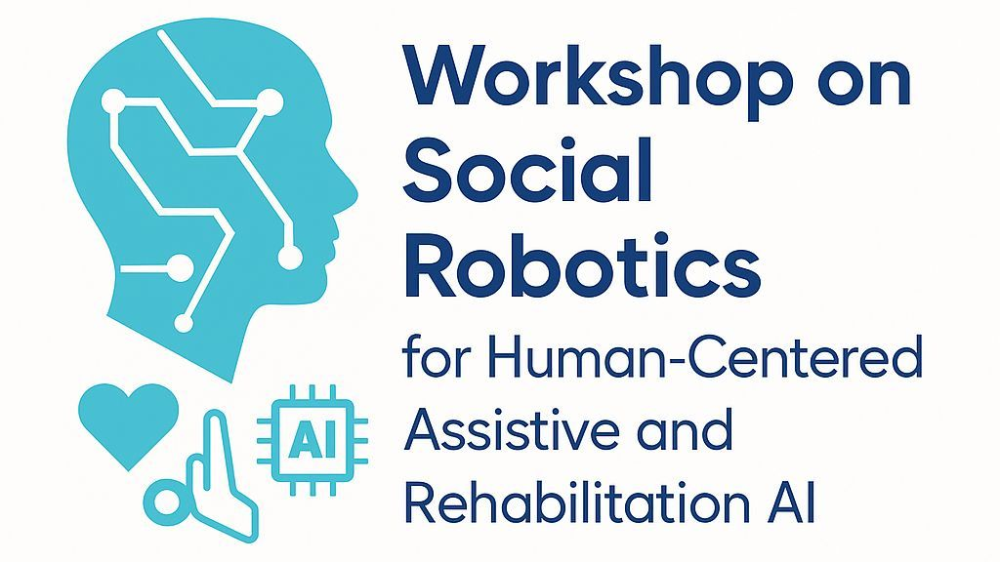

About
Awards
Finalist — Best Paper Award
2025
Finalist (Top 3) for the Best Paper Award at the I-RIM 3D 2025 conference held in Rome with the paper "Identifying Key Parameters in Physiotherapists’ Decision-Making for Robot-Aided Rehabilitation".
Supervisor — Master Thesis Award Winner
2024
Supervisor of the winner of the Master Thesis Award Istituto di Biorobotica of Scuola Superiore Sant'Anna by Gruppo Nazionale di Bioingegneria (Gianmarco Cirelli) for his excellent results obtained on the semiautonomous control strategy for a hand-wrist prosthesis based on computer vision.
First Place — Premio Qualità
2020
First place in the sixth "Premio Qualità" competition organized by the Clinical Directorate of the University Hospital Università Campus Bio-Medico di Roma. The Award aimed at presenting and rewarding experiences that, by highlighting virtuous behavior, documented an improvement in quality through an organization of work that put the patient and the operator at the center of its work.
Editorial Roles
Review Editor
Review Editor on the Editorial Board of Biomedical Robotics, specialty section of Frontiers in Robotics and AI .
Guest Editor of Special Issue
Topic Coordinator of the Research Topic on Advancements in AI-driven Multimodal Interfaces for Robot-Aided Rehabilitation on Frontiers in Robotics and AI, Frontiers in Big Data, and Frontiers in Artificial Intelligence Journals.
Guest Editor of the Special Issue on Artificial Intelligence and Intelligent Robots: Challenges and Opportunities on Applied Sciences MDPI.
Conference Chair Roles
Local Organizing Committee Member
14th Forum of Italian Ambient Assisted Living - ForItAAL 2025.
Program Committee
VII edition of the Robotics and Intelligent Machines Conference - I-RIM 3D 2025 Conference
Organizing Committee Member
Workshop on Robotics and Emerging Technologies in Rehabilitation: The Robot as a Tool for Both Assessment and Personalized Intervention - I-RIM 3D 2025 Conference.
Organizing Committee Member
Workshop on Social Robotics for Human-Centered Assistive and Rehabilitation AI - ICSR 2025 Conference.
Program Committee
Workshop on Advanced AI Methods and Interfaces for Human-Centered Assistive and Rehabilitation Robotics (a Fit4MedRob event) - AIxIA 2024 - AIxIA 2024 Conference
Program Committee
ALTRUIST 4th Workshop on “sociAL roboTs for peRsonalized, continUous and adaptIve aSsisTance” - RO-MAN 2024 Conference.
Program Committee
AIxIA 2024 (23rd International Conference of the Italian Association for Artificial Intelligence) - AIxIA 2024 Conference.
Travel Grant Chair
AIxIA 2024 (23rd International Conference of the Italian Association for Artificial Intelligence) - AIxIA 2024 Conference.
Local Organizing Committee Member
Sixth Italian Conference on Robotics and Intelligent Machines - I-RIM 3D 2024 Conference.